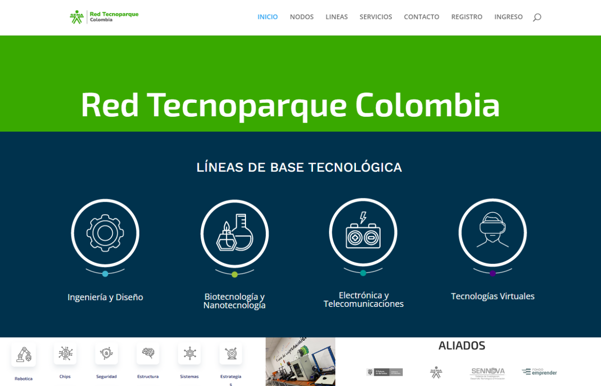

Formación de la Secretaría de Desarrollo Económico de Medellín
A través de este programa se ofrece formación técnica laboral en áreas administrativas que demanda el mercado. Actualmente, la Alcaldía de Medellín cuenta con rutas de aprendizaje asociadas a habilidades digitales, la Cuarta Revolución Industrial, turismo y economía naranja, y tiene un componente transversal de estudio del inglés.
Santander X Explorer
Banco Santander ofrece formación para transformar ideas y proyectos emprendedores en negocios viables y soluciones innovadoras. Apoya el emprendimiento en sus etapas más tempranas con un programa abierto a emprendedores de 12 países.
Cursos cortos Senatic
En estos cursos 100% virtuales, para mayores de 14 años, recibirás certificaciones avaladas por gigantes tecnológicos como: Google, Meta, AWS, IMB, entre otros, que te brindarán la posibilidad de abrirte al mundo digital.
Capacitaciones para el emprendimiento - Cámara de Comercio de Medellín
¡Emprendedores de Medellín y Antioquia, la Cámara de Comercio de Medellín quiere impulsar tus oportunidades para desarrollar tu idea de negocio y convertirla en una empresa exitosa.Participa en charlas gratuitas, donde fortalecerás los principales aspectos de tu negocio.
Formación para MiPymes - Comfama
Este programa de formación ofrece a las MiPymes de Antioquia una oportunidad única para crecer y prosperar en un entorno dinámico. A través de una metodología innovadora y contenidos actualizados, los participantes adquirirán herramientas y conocimientos prácticos en áreas como gestión estratégica, finanzas, marketing digital, innovación, sostenibilidad y liderazgo.
Cursos y Diplomados - Comfenalco
Para potenciar el desarrollo de los emprendedores, la caja de compensación de Antioquia, Comfenalco ha desarrollado una gama de cursos y diplomados gratuitos en diferentes disciplinas a los puedes acceder registrando tu hoja de vida en el Servicio Público de Empleo.
Red Tecnoparque Colombia
Es un programa de innovación tecnológica del Servicio Nacional de Aprendizaje dirigida a todos los Colombianos, que actúa como acelerador para el desarrollo de proyectos de I+D+i materializados en prototipos funcionales en cuatro líneas tecnológicas: Electrónica y Telecomunicaciones, Tecnologías Virtuales, Ingeniería y diseño y Biotecnología nanotecnología, que promueva el emprendimiento de base tecnológica.
Medellín Joven
Este proyecto de la Secretaría de la Juventud de Medellín conecta a los jóvenes con oportunidades gratuitas en educación, empleo, emprendimiento, arte, cultura, deporte y más.
CATI
Los Centros de Apoyo a la Tecnología y la Innovación (CATI) son espacios que le ofrecen a los emprendedores, inventores, investigadores, innovadores, empresarios, instituciones y MiPymes de Antioquia, orientación y asistencia personalizada sobre la protección de sus creaciones. Este acompañamiento no tiene costo y se especializa en propiedad industrial (marcas, diseños industriales y patentes) e información tecnológica.
Sea Emprendedor SENA
El SENA es el lugar ideal para emprender en Colombia y dar el salto a mercados internacionales. Mediante asesorías, acompañamiento, formación y financiación, la creación de empresas es una posibilidad real para generar ingresos y empleo a los colombianos.